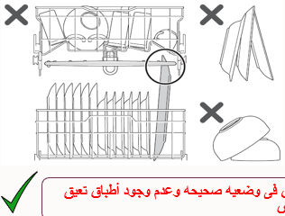
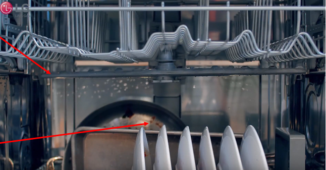

اقرأ للعميل
«ترتيب الأطباق صح بيفرق جدًا في التنضيف — هنراجع مع بعض الأواني اللي متدخلش الغسالة، وإزاي ترتّب الأطباق من غير ما تعطّل الرشاشات.»
أواني ممنوع تدخل غسالة الأطباق
المية السخنة جدًا مع مواد التنظيف ممكن تبوّظها.
ترتيب الأطباق صح
١
متحطش الأطباق بشكل يعطّل حركة الرشاش — ده أكيد هيأثر على التنضيف. رتّب الأطباق بحيث الرشاش يلف بحرية.
٢
متكدّسش الرف السفلي بالحلل الكبيرة — الرشاش السفلي هو الأقوى، ولو اتسدّ المية مش هتوصل كويس للرفوف اللي فوق.

✗ أطباق فوق بعض، أو طبق طويل بيعطّل الرشاش

✓ الأطباق في وضع صحيح ومفيش حاجة معطّلة الرشاش الأوسط
Created by ICC QA & Training Team